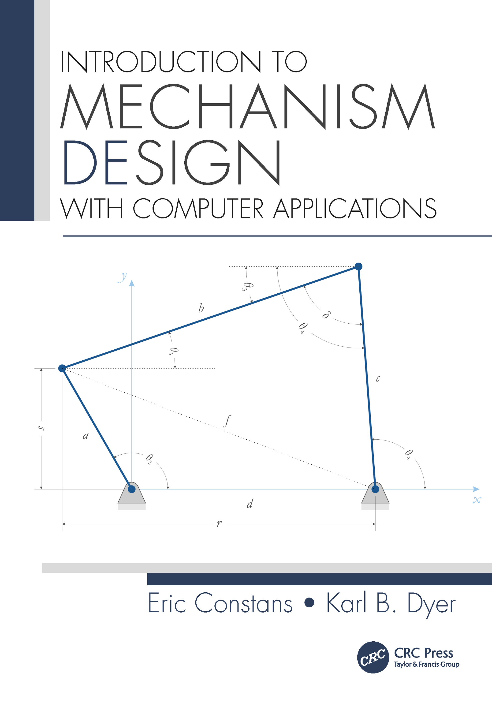

Introduction to Mechanism Design: with Computer Applications

You have arrived at the companion website to the textbook Introduction to
Mechanism Design: with Computer Applications. This site brings mechanisms,
planetary gearsets, and cam-follower designs "to life" through javascript animations.
A mechanism is a set of components connected together in such a way as to produce
a desired motion. Examples of mechanisms in everyday life are numerous, and
include windshield wipers, mechanical watch movements, the piston/connecting-rod/crankshaft
assembly in an automotive engine and the fancy “European hinges” found in
upscale kitchen cabinets. In each of these instances, the designer was
confronted with the problem of producing a desired motion (e.g. sweeping a
wiper across a windshield) in the most economical way.
Up until the recent past, mechanical designers have employed drafting tools
(triangle, T-square, compass) to complete their work. These tools have been
entirely superseded by computer-aided design tools such as CAD software and
mathematical simulation software. While a mechanical engineer might use a
pencil and sketch pad to help in brainstorming a design, the final result will
inevitably be developed and communicated through software. This wholesale
change in the mechanical design process has been largely ignored in most
mechanical design textbooks, where references to compasses and dividers are
still common.